assay-plate-blank-correct FAIL 0
grade table_goldintent repairdomain scientific_researchdifficulty d3ambiguity a4voice terseapps libreoffice_calc + filesbatch wave2-main-s1
The absorbance readings in the plate-reader spreadsheet in my Documents were never blank-corrected and the plate map there says which wells are blanks. Sort it out so every sample reading is net of its own plate's blank, two decimals.
task config + evaluator
{
"config": [
{
"type": "execute",
"parameters": {
"command": "mkdir -p '/home/user/Documents' && rm -f '/tmp/__fixture.b64' && printf %s 'UEsDBBQACAgIAE1nHF0AAAAAAAAAAAAAAAALAAAAX3JlbHMvLnJlbHOtks9qwzAMh+99CqN747SFMUacXsqgtzK6B9BsJTGJ/2BrW/b2M2OwdZSwwY6Wf/r0IdTsZzeJF0rZBq9gU9UgyOtgrO8VPJ7v17ewb1fNA03IJZIHG7MoPT4rGJjjnZRZD+QwVyGSLz9dSA65PFMvI+oRe5Lbur6R6TsD2gumOBoF6Wg2IM5vkX7DDl1nNR2Cfnbk+cqIH4lCxtQTK5gn+RrS+BTCWBUoyOsu27+6mAUXR4wGGaUOidYxFUhiS/nLqnSfSjl/JJa8dv+5I5qZvCGzrIQxfhqtGnlxC+07UEsHCGu/dgTfAAAAQgIAAFBLAwQUAAgICABNZxxdAAAAAAAAAAAAAAAADwAAAHhsL3dvcmtib29rLnhtbI1SyW7bMBC99ysE3m0tTlTHsBy4coQE6BLEaXIsKGlksaZIgRxvLfrvHVFWkqI99CCRs/DNm5k3vz420tuDsUKrhIXjgHmgCl0KtUnY18dsNGWeRa5KLrWChJ3AsuvFu/lBm22u9daj98omrEZsZ75vixoabse6BUWRSpuGI5lm49vWAC9tDYCN9KMgiP2GC8V6hJn5HwxdVaKAlS52DSjsQQxIjsTe1qK1bDGvhISnviGPt+1n3hDtlMuC+YsX2vfGy3mx3bUZZSes4tICNVrrw5f8OxRIHXEpmVdyhFQ3LVXIhRR4GnL/wNJIT6geOTvHk4CDfY13poO+1Ub80Aq5XBdGS5kwNLtzWWKMovhXZN1N7JHndnAen4Uq9SFhtKvTm/vBXZ9FiTVtMp5MLwbfLYhNjQmbhlcR85DnD93EEhYH9KwSxqIr4lA4dbIHqtdZ1JD/piO3vOH0lJtsS9OHb91qSTK2o0yxu5IYOOEgpeyFFbkk5mYmKGDuysghD3DUdkELEQjGjXuniErYcTNQfdIlQSwJ7Rx/2dbZXoFETmTHQRB2sHDEjxbdeZaW1HT/S15S5AZ6QTltMW9nRMJ+vo+jOJ3G0ShahpNRGN5cjj5MLi5H2U2W0QDTVXqV/SKdOdQZfWlP36KhCTxAtT7Rio+95paOkk9Z/d8x8wdlLH4DUEsHCBXaYYYDAgAAfwMAAFBLAwQUAAgICABNZxxdAAAAAAAAAAAAAAAADQAAAHhsL3N0eWxlcy54bWztWF1P2zAUfd+vsPw+kpZSYEqDGKjTXia0lmnStAeTOImHPyLbhYZfz3WcpkkLTOoeVqQ+2ff4nuOTa1u1G10sBUcPVBum5AQPjkKMqExUymQ+wbfz6cczjIwlMiVcSTrBFTX4Iv4QGVtxOisotQgUpJngwtryUxCYpKCCmCNVUgkjmdKCWAh1HphSU5IaRxI8GIbhOBCESRxHciGmwhqUqIW0YKOFkG++pgCORxh5uSuVgpUvVFJNOA7iKGgE4ihTcq0zwh6II/OEHggHkdClSyKoj6/pH/JjgWZEGjeQEcF45YeGtbCnvy1yqZm30aWHe0OvG1caxnlbmiH2QByVxFqq5RQC1PTnVQn1lbDgXqbO+0t2rkk1GJ50CHUD894pncIG6y6uh1DKSK4k4bflBGeEG4pb6Fo9yhUYR5xmFoQ1ywvXWlUGTsRaJaCz4ripvXLbgekTyvnM7daf2frrQxBdZtu7S9YBHALnvel6pSYgZcmrqXIiVi9oA3yuU3rQJWe5FHQj8UYrSxNbH7YajiOySkSF0uwJpN0C5s3mdmfTssRB/nsxsnRpvytLvAp4etSknAPYFpHJtJ4Yxkyhmbyfqylrh6FMZWsDcZXc03RlsmApUDuZwTLbqFS4rtNg1zo1PjcL1YW7lVptg/djZngw84qZnc/WwczBzMHMwczBzC5mRsf79Es5GuyVm9FeuRnuk5vz/2wm6F7f/WW+c48f7HqNX2bbzrt+/tH6O7jTB00pOw+ktqxj3EGRe2pO8Df38uadyt0tGLdM+ijYJlwpIcgqf3DSIxy/SkC/wt8tadwjjV8kLbSmMqlazmmPM3qL05vrrMc7fYl3Q3UCa9BSznsU//RdFxOC9Z8k8TNQSwcIP9SAxZECAABpEQAAUEsDBBQACAgIAE1nHF0AAAAAAAAAAAAAAAAYAAAAeGwvd29ya3NoZWV0cy9zaGVldDEueG1svZjLcts2FIb3fQoOF1k14l2XRFLGluOmM06cqXKZ6Q4mQQs1STAAKNl++h6AFEUBUJvOuPLCEoGf5/IdEALP/N1jWThbzDih1cINRr7r4CqlGanuF+7XL9evp67DBaoyVNAKL9wnzN13y1/mO8oe+AZj4YCBii/cjRD1G8/j6QaXiI9ojSuYySkrkYBLdu/xmmGUqZvKwgt9f+yViFRua+EN+xkbNM9Jiq9o2pS4Eq0RhgskIHy+ITXfW3vMfspextAOUt3HMwjxqp3p7QWxYa8kKaOc5mKU0rILzcxy5s2O8izTnwmsROyhqV+D4RqSuyMFEU8qRnc5V8Y/MycnhcDsI82gLjkqOIa5Gt3jNRZfazUvvtDPMLCf9pZzr7t5Oc8IIJRldxjOF+5F8OZ9EEmJUnwjeMcH3x2+obtrCLApEN/bU4O/MZLdkArDqGBNN/gH3a1o8QFIwNIaTvyJAdl+gJH7DYR4g3PRmxTobo0LnAqcDe+7bUQBTtZP5R0tegMZzlFTCBkCuKNsP76FiBduJXkWYJLW0sUKF4XM03VSqf0d7I9j13mmtFynqABKge8Prj+p2/VRyfMGPdFGYQETMCkfhjtKH+SINOvLIqkkJN4ayQenC8J1EIxu8SGYw3V7q8N/dAU51EsaHn7fV+ZarRgodQcCIHwnmdjIoEf+NPSjIEx6TFCUD1gih+lwBA/2MxRjP9Lhpy3nG7zFBehVQMMx8NDm5x0FsJwDU67+S7oFqrmsX2c0bbigZRdZW6ENyTJcWd0qnyV6hCjhk1Tqk4snWSEJuzUTjyZTCehlPYadx9DiMRlFs5f3GHUeI4vHySj5H3KMO4+xxSMsm3H48i6TzmVicxmNYuXSa5dQu/sigZZzRncOU+VvHberrfd1WMhaEK36H1a28m+kB1lLd/Kh5EoBN3MY3S79ubeVAXaKS1MRHCtWpiI8VlyZiuhY8d5UxL3CAzY9oPDMgEIjsEQDZCrGGiBTMdEADRVVWwa5p9kRRGdGEBnhTzUEpkJHYCpmGoLIgmASnVgF8ZkRxOZDoD8npkRnYCp0BrGFwTgI7AySMzNITAbaTnBpSnQGpkJnkFgYzPzEzmB8ZgZjk4G2111aJNpmtzIl+n4wtu0HkxMLYXJmCBMzw1iDYJHoEEyJvhImFghJPLVDmJ4ZwtTMUP9hsEh0CKZEhzC1QJgGJ34ZZmeGMDMz1B74S4tEh2BKdAgzC4RoNrNDCPxzn6F8M0ftgb60abRf0ZVFo+8LR5J+Y5id2B2Ds58mLYfFmU7CojFImBp9SRxJWhLByA9PnBeCcx8bA/PMFxona1NjkjA1Bgnb4XE8jk6QOPfpMTCPfqF+brBoTBL/foQMbGfIeDrRSHiD166akUrc1qqn5mwwks3AQ8/n/tDv0UfWWPSvhZSRZ1oJVKxwJTAbvERuMRMkNSe8tnv1EbF7Ao4L1RWC8+50knStosOloLXqVibhpP+DKt1RAWWxzWxUK+pgIKdUDK69vnPW1E6NaszW5BmrHw8+6A2pjtq+w9Jd9i0V15Embpnyk9Fd9WWDq1vIFlYGI5Cs6lIu3JoywRAREG6B0oeLKvu+IaJv0jkZQ4N+WIqLYkVL2e7ksqVVYemXcSEbUZ+a8g63b8gNx9f6sF6Kq5rAm5JMZF+Dw0hKayJrqrpOLa1rxcjJSJ5DnSqh7B/C3A/fZtn77eHZWM5plrWdv+UrVNZvV+r/qx8NFW+v8F/oW+OsMSP5r5eUPrTDShGE6uNi7h0MSFttGP/VluTgqO+flcHOytwb5gaXfSN7+TdQSwcIg0beq0gFAAAMFwAAUEsDBBQACAgIAE1nHF0AAAAAAAAAAAAAAAAaAAAAeGwvX3JlbHMvd29ya2Jvb2sueG1sLnJlbHOtkU1rwzAMhu/9FUb3xUkHY4w4vYxBr/34AcZR4tDENpLWtf9+LhtbCmXs0JPQ1/O+SPXqNI3qiMRDDAaqogSFwcV2CL2B/e7t4RlWzaLe4Gglj7AfEqu8E9iAF0kvWrPzOFkuYsKQO12kyUpOqdfJuoPtUS/L8knTnAHNFVOtWwO0bitQu3PC/7Bj1w0OX6N7nzDIDQnNch6RM9FSj2LgKy8yB/Rt+eU95T8iHdgjyq+Dn1I2dwnVX2Ye73oLbwnbrVB+7Pwk8/K3mUWtr97dfAJQSwcIT/D5etIAAAAlAgAAUEsDBBQACAgIAE1nHF0AAAAAAAAAAAAAAAAUAAAAeGwvc2hhcmVkU3RyaW5ncy54bWyVk8tOwzAQRfd8hTV76iStEKocV0lUNpSq4iHWbjI0kRw7eJwK/h4DG1ZourR95l6dkaw2H6MVZww0eFdCvshAoGt9N7hTCS/Pd9e3ICga1xnrHZbwiQQbfaWIokijjkroY5zWUlLb42ho4Sd06eXNh9HEdAwnSVNA01GPGEcriyy7kaMZHIjWzy6WsMpBzG54n7H5vSgK0IoGrX5K1jSZNnWnFMJwRtCvaK2SUSv5Df0DHqyJyCIfveWB1ZF8OBrX8vA9xgsnqpynxsPqXbW/5/UWLOypejjstrzEJQ9b8UyYe+Fp1EyMp1DzFBqmAq+04Sk0zLQ/CjJ9b/0FUEsHCBW+OI39AAAAHAQAAFBLAwQUAAgICABNZxxdAAAAAAAAAAAAAAAAEQAAAGRvY1Byb3BzL2NvcmUueG1sbZHNTsMwEITvPEXke+IEJISiJJU4cKISUqnE1djb1MV/srdN+/Y4CTVF5LYz+3ls7zars1bZCXyQ1rSkKkqSgeFWSNO3ZPv+kj+RLCAzgilroCUXCGTV3TXc1dx6ePPWgUcJIYtBJtTctWSP6GpKA9+DZqGIhInNnfWaYZS+p47xL9YDvS/LR6oBmWDI6BiYu5RIfiIFT5Hu6NUUIDgFBRoMBloVFf1lEbwOiwemzg2pJV4cLKLXZqLPQSZwGIZieJjQ+P6KfqxfN9NXc2nGUXEgXSN4zT0wtL5r6K2ItYDAvXQYRz43/xhRK2b6Y5xPBybfbiYkWePkFQu4jjvaSRDPl5ix4EXLw0mOe+3KiUhyvCIcPw/Acb4/iVijRAWzfS3/7br7BlBLBwgty4yUJwEAADcCAABQSwMEFAAICAgATWccXQAAAAAAAAAAAAAAABAAAABkb2NQcm9wcy9hcHAueG1snZBNb8IwDIbv+xVVxLVNKBsglAZtmnZC2g4d2q3KEhcy5UtJisq/XwANOM8n+7X12H7pejS6OECIytkGTSuCCrDCSWV3Dfps38olKmLiVnLtLDToCBGt2QP9CM5DSApikQk2Nmifkl9hHMUeDI9Vbtvc6V0wPOUy7LDreyXg1YnBgE24JmSOYUxgJcjSX4HoQlwd0n+h0onTfXHbHn3mMdqC8ZonYBTf0tYlrltlgJEsXwv67L1WgqfsCNuo7wDv5xV4Uc2qRVVPNsoOY/e1nHfzx+JuoMsv/IBIeEYmL4PSsqwpvoedyNuL1Wz6VJEc54E/jeKbq+wXUEsHCBnnNer5AAAAmgEAAFBLAwQUAAgICABNZxxdAAAAAAAAAAAAAAAAEwAAAFtDb250ZW50X1R5cGVzXS54bWy9VDtPwzAQ3vsrIq8odsuAEEragccIlSgzMvElMY0fst3S/nvOKVRVCSmIiMmy776XT3Y226gmWYPz0uicTOiYJKALI6SucvK0uEsvyWw6yhZbCz7BXu1zUodgrxjzRQ2Ke2osaKyUxikecOsqZnmx5BWw8/H4ghVGB9AhDZGDTLMbKPmqCcntBo93uggnyfWuL0rlhFvbyIIHLLNYZZ04B43vAa61OHKXfjijiGx7fC2tP/tewerqSECqmCyedyNeLXRD2gJiHvC6nRSQzLkL91xhA3uOSRgdOE+X0qZhb8YtX4xZ0v5r71AzZSkLEKZYKYRQbx1w4WuAoBrarlRxqU/o+7BtwA+t3pL+IHkL8KxdJgOb2POf8LEb9+Ec/mn0vuYOxGNw+L4Hn8Ahd58PxM+dsR5/Bge/N/GZO6JTi0Tgguwf/V4Rqf+cGuJbFyC+ao8y1n6U03dQSwcIj/blNlkBAABXBQAAUEsBAhQAFAAICAgATWccXWu/dgTfAAAAQgIAAAsAAAAAAAAAAAAAAAAAAAAAAF9yZWxzLy5yZWxzUEsBAhQAFAAICAgATWccXRXaYYYDAgAAfwMAAA8AAAAAAAAAAAAAAAAAGAEAAHhsL3dvcmtib29rLnhtbFBLAQIUABQACAgIAE1nHF0/1IDFkQIAAGkRAAANAAAAAAAAAAAAAAAAAFgDAAB4bC9zdHlsZXMueG1sUEsBAhQAFAAICAgATWccXYNG3qtIBQAADBcAABgAAAAAAAAAAAAAAAAAJAYAAHhsL3dvcmtzaGVldHMvc2hlZXQxLnhtbFBLAQIUABQACAgIAE1nHF1P8Pl60gAAACUCAAAaAAAAAAAAAAAAAAAAALILAAB4bC9fcmVscy93b3JrYm9vay54bWwucmVsc1BLAQIUABQACAgIAE1nHF0VvjiN/QAAABwEAAAUAAAAAAAAAAAAAAAAAMwMAAB4bC9zaGFyZWRTdHJpbmdzLnhtbFBLAQIUABQACAgIAE1nHF0ty4yUJwEAADcCAAARAAAAAAAAAAAAAAAAAAsOAABkb2NQcm9wcy9jb3JlLnhtbFBLAQIUABQACAgIAE1nHF0Z5zXq+QAAAJoBAAAQAAAAAAAAAAAAAAAAAHEPAABkb2NQcm9wcy9hcHAueG1sUEsBAhQAFAAICAgATWccXY/25TZZAQAAVwUAABMAAAAAAAAAAAAAAAAAqBAAAFtDb250ZW50X1R5cGVzXS54bWxQSwUGAAAAAAkACQA/AgAAQhIAAAAA' >> '/tmp/__fixture.b64' && base64 -d '/tmp/__fixture.b64' > '/home/user/Documents/plate_readings.xlsx'",
"shell": true
}
}
],
"evaluator": {
"func": "compare_table",
"result": {
"type": "vm_file",
"path": "/home/user/Documents/plate_readings.xlsx",
"dest": "assay-plate-blank-correct-result.xlsx"
},
"expected": {
"type": "cloud_file",
"path": "http://127.0.0.1:8021/wave2-main-s1/files/assay-plate-blank-correct/gold/plate_readings.xlsx",
"dest": "assay-plate-blank-correct-gold-af189bd5.xlsx"
},
"options": {
"rules": [
{
"type": "sheet_data",
"sheet_idx0": "RI0",
"sheet_idx1": "EI0"
}
]
},
"postconfig": [
{
"type": "activate_window",
"parameters": {
"window_name": "plate_readings.xlsx - LibreOffice Calc",
"strict": true
}
},
{
"type": "sleep",
"parameters": {
"seconds": 0.5
}
},
{
"type": "execute",
"parameters": {
"command": [
"python",
"-c",
"import pyautogui; pyautogui.hotkey(\"ctrl\", \"s\");"
]
}
},
{
"type": "sleep",
"parameters": {
"seconds": 0.5
}
}
]
}
}
step 1 09:50:48
THINKINGLet me start by understanding the task. There's a plate-reader spreadsheet in the Documents folder. It has absorbance readings that were never blank-corrected. The plate map in the spreadsheet says which wells are blanks. I need to:
1. Find the spreadsheet in Documents
2. Understand the plate map to identify which wells are blanks
3. For each plate, find its blank
4. Subtract the blank value from each sample reading (net of its own plate's blank)
5. Round to two decimals
Let me start by taking a screenshot to see the current state, then open the file manager or find the file.
First, let me take a screenshot to see the current state.
ACTIONI'll start by taking a screenshot to see the current state of the desktop, then locate the spreadsheet in Documents.
TOOL CALL<tool_call>
<function=computer_use>
<parameter=action>
screenshot
</parameter>
</function>
</tool_call>
EXECUTED (pyautogui in VM)WAIT
step 2 09:51:00
THINKINGLet me first explore the Documents folder to find the spreadsheet. I'll use a terminal to explore the file system. Let me open the terminal.
Actually, let me first understand the file structure. I'll open the terminal application from the dock.
ACTIONLet me open a terminal to explore the Documents folder and find the spreadsheet file.
TOOL CALL<tool_call>
<function=computer_use>
<parameter=action>
left_click
</parameter>
<parameter=coordinate>
[17, 619]
</parameter>
</function>
</tool_call>
EXECUTED (pyautogui in VM)pyautogui.click(32, 669)
step 3 09:51:16
THINKINGThe terminal is open. Let me look at the Documents folder to find the spreadsheet.
ACTIONThe terminal is open. Let me look at the Documents folder to find the spreadsheet file.
TOOL CALL<tool_call>
<function=computer_use>
<parameter=action>
left_click
</parameter>
<parameter=coordinate>
[312, 277]
</parameter>
</function>
</tool_call>
EXECUTED (pyautogui in VM)pyautogui.click(599, 299)
step 4 09:51:33
THINKINGLet me type a command to list the Documents folder.
TOOL CALL<tool_call>
<function=computer_use>
<parameter=action>
type
</parameter>
<parameter=text>
ls -la ~/Documents/
</parameter>
</function>
</tool_call>
EXECUTED (pyautogui in VM)pyautogui.typewrite("ls -la ~/Documents/")
step 5 09:51:45
THINKINGThe command is typed but I need to press Enter. Wait, I did include a newline in the type. Let me press Enter to be sure.
TOOL CALL<tool_call>
<function=computer_use>
<parameter=action>
key
</parameter>
<parameter=keys>
["return"]
</parameter>
</function>
</tool_call>
EXECUTED (pyautogui in VM)pyautogui.press("return")
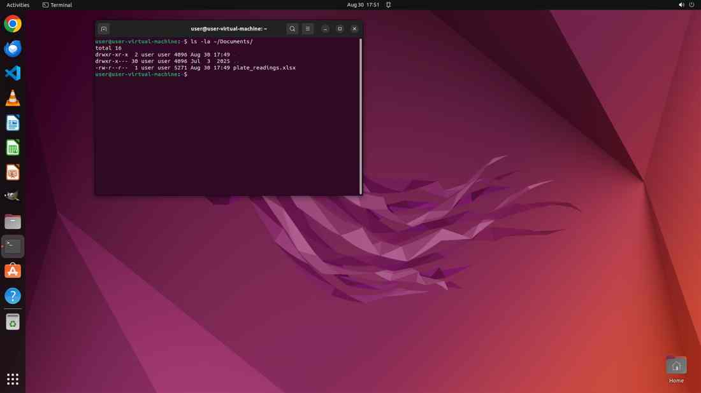
step 6 09:52:00
THINKINGI found the file: `plate_readings.xlsx`. Let me examine its contents. I'll use Python to read it since it's an xlsx file. Let me first check if Python and openpyxl are available.
Let me write a Python script to inspect the file. First, let me check what's available.
ACTIONFound `plate_readings.xlsx`. Let me examine its contents using Python. First, let me check what tools are available.
TOOL CALL<tool_call>
<function=computer_use>
<parameter=action>
type
</parameter>
<parameter=text>
python3 -c "import openpyxl; print(openpyxl.__version__)"
</parameter>
</function>
</tool_call>
EXECUTED (pyautogui in VM)pyautogui.typewrite("python3 -c \"import openpyxl; print(openpyxl.__version__)\"")
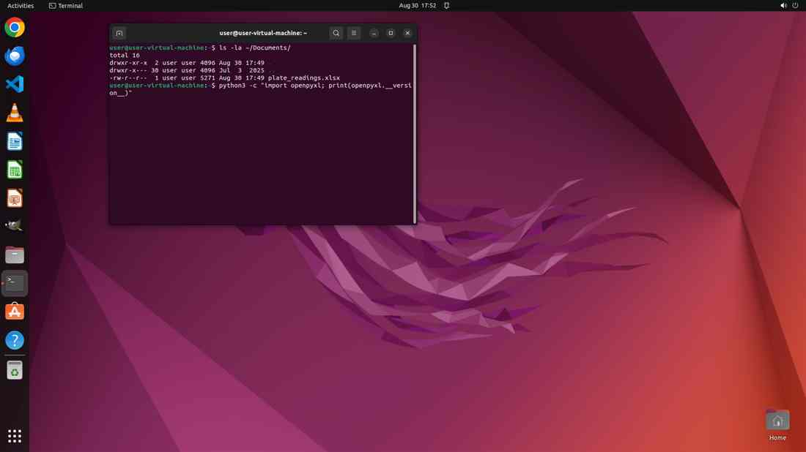
step 7 09:52:10
THINKINGThe command hasn't executed yet - I see the text but not the output. Let me press Enter.
Wait, actually I see the command was typed but the terminal shows it wrapped. Let me press Enter to run it.
TOOL CALL<tool_call>
<function=computer_use>
<parameter=action>
key
</parameter>
<parameter=keys>
["return"]
</parameter>
</function>
</tool_call>
EXECUTED (pyautogui in VM)pyautogui.press("return")
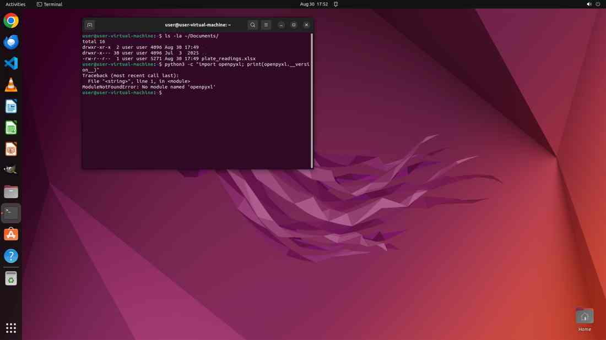
step 8 09:52:22
THINKINGopenpyxl is not installed. Let me install it via pip.
ACTIONopenpyxl is not installed. Let me install it via pip.
TOOL CALL<tool_call>
<function=computer_use>
<parameter=action>
type
</parameter>
<parameter=text>
pip3 install openpyxl
</parameter>
</function>
</tool_call>
EXECUTED (pyautogui in VM)pyautogui.typewrite("pip3 install openpyxl")

step 9 09:52:34
THINKINGThe pip3 install command is running. Let me wait for it to complete. Let me take a screenshot after a moment.
ACTIONThe pip install is running. Let me wait for it to complete.
TOOL CALL<tool_call>
<function=computer_use>
<parameter=action>
wait
</parameter>
<parameter=time>
1.0
</parameter>
</function>
</tool_call>
EXECUTED (pyautogui in VM)WAIT
step 10 09:52:46
THINKINGIt seems the pip install command is still running, or the prompt hasn't updated. Let me wait a bit more.
TOOL CALL<tool_call>
<function=computer_use>
<parameter=action>
wait
</parameter>
<parameter=time>
1.0
</parameter>
</function>
</tool_call>
EXECUTED (pyautogui in VM)WAIT
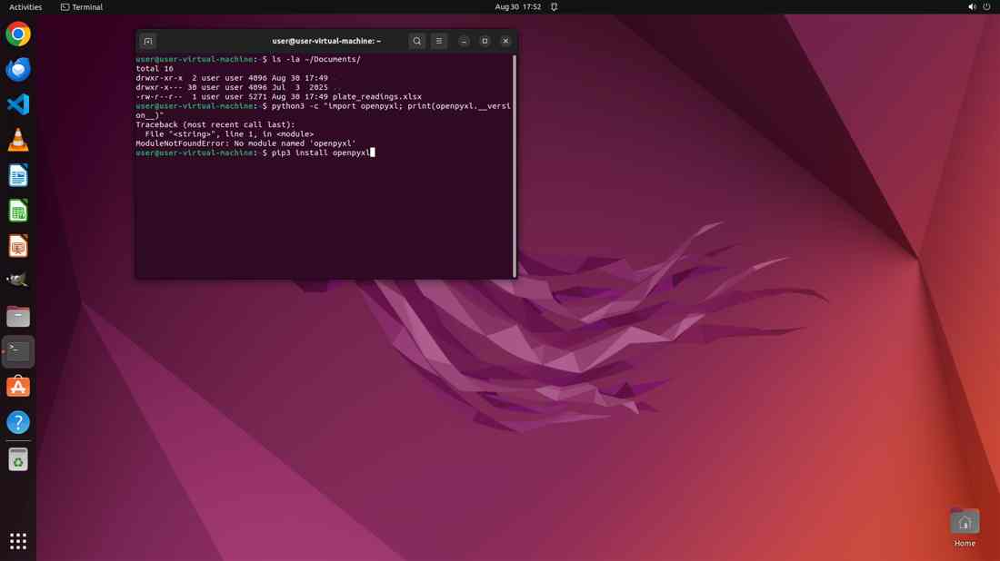
step 11 09:53:04
THINKINGI notice the pip command doesn't seem to have executed - the prompt still shows "pip3 install openpyxl" with the cursor at the end. Wait, looking more carefully, it seems the command is still on the same line as the prompt. Let me press Enter to run it. Actually, I included a newline in the type command earlier. Hmm, but the cursor is at the end of "openpyxl" line. Maybe it's still running (pip can take a while). Let me wait a bit more.
Actually, looking at it, the text "pip3 install openpyxl" is displayed with cursor after it, which suggests it's still on the command line, not yet executed. But I did press Enter via the type's newline. Let me just wait more and take another screenshot.
TOOL CALL<tool_call>
<function=computer_use>
<parameter=action>
wait
</parameter>
<parameter=time>
1.0
</parameter>
</function>
</tool_call>
EXECUTED (pyautogui in VM)WAIT
step 12 09:53:17
THINKINGThe pip command hasn't executed yet - it seems the newline in the type didn't register as Enter. The cursor is at the end of "openpyxl" with a block cursor. Let me press Enter explicitly.
ACTIONThe command hasn't executed yet. Let me press Enter explicitly.
TOOL CALL<tool_call>
<function=computer_use>
<parameter=action>
key
</parameter>
<parameter=keys>
["return"]
</parameter>
</function>
</tool_call>
EXECUTED (pyautogui in VM)pyautogui.press("return")
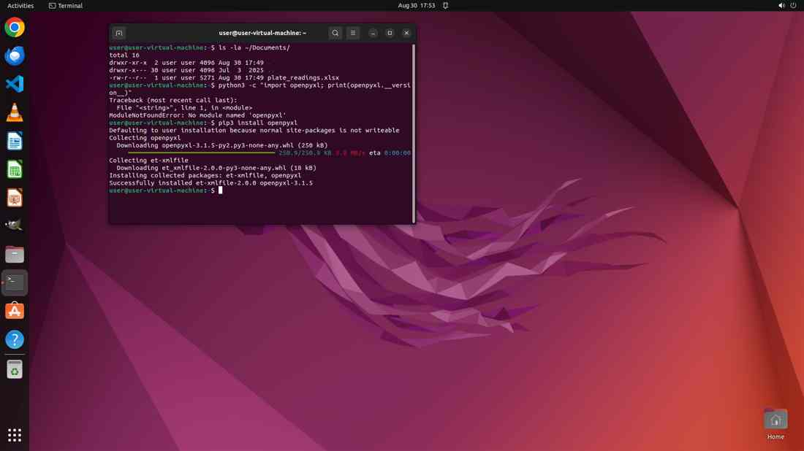
step 13 09:53:28
THINKINGopenpyxl 3.1.5 has been installed successfully. Now let me inspect the spreadsheet contents. Let me write a Python script to examine the file. I'll create a script to read all the sheets and print their contents.
Let me first look at the structure. I'll write a script to a file to inspect the data.
Let me use a here-doc to write the inspection script.
ACTIONopenpyxl is installed. Now let me inspect the spreadsheet structure. Let me write a Python script to examine all sheets.
TOOL CALL<tool_call>
<function=computer_use>
<parameter=action>
type
</parameter>
<parameter=text>
cd ~/Documents && python3 -c "
import openpyxl
wb = openpyxl.load_workbook('plate_readings.xlsx', data_only=True)
print('SHEETS:', wb.sheetnames)
for ws in wb.worksheets:
print('=== SHEET:', ws.title, 'dims:', ws.dimensions, 'max_row:', ws.max_row, 'max_col:', ws.max_column)
"
</parameter>
</function>
</tool_call>
EXECUTED (pyautogui in VM)pyautogui.typewrite("cd ~/Documents && python3 -c \"\nimport openpyxl\nwb = openpyxl.load_workbook('plate_readings.xlsx', data_only=True)\nprint('SHEETS:', wb.sheetnames)\nfor ws in wb.worksheets:\n print('=== SHEET:', ws.title, 'dims:', ws.dimensions, 'max_row:', ws.max_row, 'max_col:', ws.max_column)\n\"")
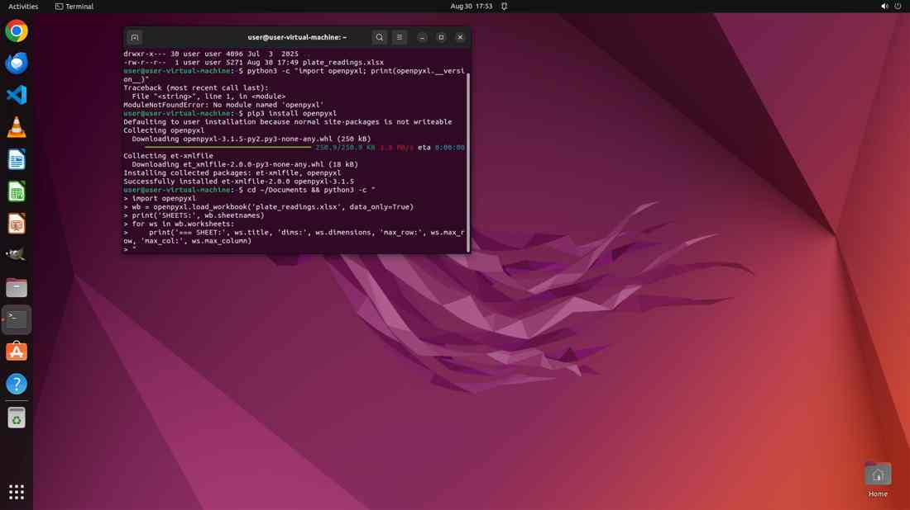
step 14 09:53:38
THINKINGThe multi-line command is being entered. The last line is `> "` which closes the string. Let me press Enter to execute.
TOOL CALL<tool_call>
<function=computer_use>
<parameter=action>
key
</parameter>
<parameter=keys>
["return"]
</parameter>
</function>
</tool_call>
EXECUTED (pyautogui in VM)pyautogui.press("return")
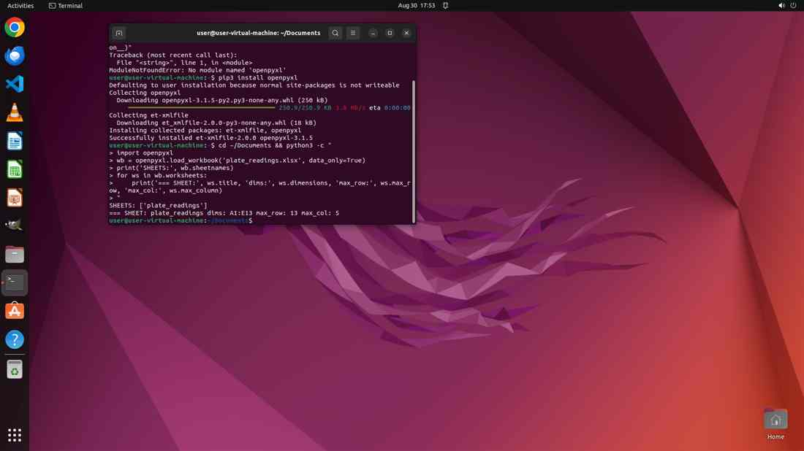
step 15 09:53:50
THINKINGNow I can see:
- SHEETS: ['plate_readings']
- === SHEET: plate_readings dims: A1:E13 max_row: 13 max_col: 5
So there's a single sheet with 13 rows and 5 columns. Let me now print all the cell values to understand the structure.
Let me write a script to dump all cells.
ACTIONThere's one sheet `plate_readings` with 13 rows and 5 columns. Let me dump all cell values to understand the structure.
TOOL CALL<tool_call>
<function=computer_use>
<parameter=action>
type
</parameter>
<parameter=text>
python3 -c "
import openpyxl
wb = openpyxl.load_workbook('plate_readings.xlsx', data_only=True)
ws = wb['plate_readings']
for r in range(1, ws.max_row+1):
vals = []
for c in range(1, ws.max_column+1):
cell = ws.cell(row=r, column=c)
vals.append(repr(cell.value))
print(r, '|', ' || '.join(vals))
"
</parameter>
</function>
</tool_call>
EXECUTED (pyautogui in VM)pyautogui.typewrite("python3 -c \"\nimport openpyxl\nwb = openpyxl.load_workbook('plate_readings.xlsx', data_only=True)\nws = wb['plate_readings']\nfor r in range(1, ws.max_row+1):\n vals = []\n for c in range(1, ws.max_column+1):\n cell = ws.cell(row=r, column=c)\n vals.append(repr(cell.value))\n print(r, '|', ' || '.join(vals))\n\"")
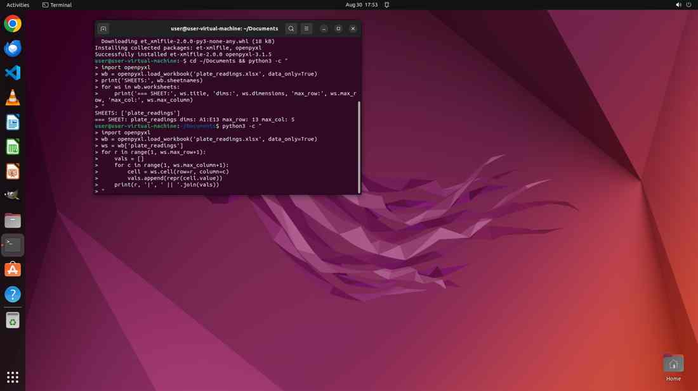
step 16 09:54:00
THINKINGThe command is entered. Let me press Enter to execute.
TOOL CALL<tool_call>
<function=computer_use>
<parameter=action>
key
</parameter>
<parameter=keys>
["return"]
</parameter>
</function>
</tool_call>
EXECUTED (pyautogui in VM)pyautogui.press("return")
step 17 09:55:19
THINKINGNow I can see the full data structure:
```
1 | 'Well' || 'Plate' || 'Role' || 'Absorbance' || 'NetAbsorbance'
2 | 'A1' || 'P1' || 'BLANK' || 0.082 || None
3 | 'A2' || 'P1' || 'SAMPLE' || 0.734 || None
4 | 'A3' || 'P1' || 'SAMPLE' || 0.611 || None
5 | 'A4' || 'P1' || 'SAMPLE' || 0.905 || None
6 | 'B1' || 'P2' || 'BLANK' || 0.071 || None
7 | 'B2' || 'P2' || 'SAMPLE' || 0.548 || None
8 | 'B3' || 'P2' || 'SAMPLE' || 0.812 || None
9 | 'B4' || 'P2' || 'SAMPLE' || 0.399 || None
10 | 'C1' || 'P3' || 'BLANK' || 0.095 || None
11 | 'C2' || 'P3' || 'SAMPLE' || 1.024 || None
12 | 'C3' || 'P3' || 'SAMPLE' || 0.663 || None
13 | 'C4' || 'P3' || 'SAMPLE' || 0.487 || None
```
So the columns are:
- A: Well
- B: Plate
- C: Role (BLANK or SAMPLE)
- D: Absorbance
- E: NetAbsorbance (currently empty/None)
The task: "Sort it out so every sample reading is net of its own plate's blank, two decimals."
So I need to:
1. For each plate (P1, P2, P3), find its BLANK absorbance value.
2. For each SAMPLE, compute NetAbsorbance = Absorbance - (its plate's BLANK value), rounded to two decimals.
The question is: where should the net values go? There's a "NetAbsorbance" column (E) that's currently empty. It makes sense to fill in the NetAbsorbance column for the SAMPLE rows.
Wait, let me re-read the task: "Sort it out so every sample reading is net of its own plate's blank, two decimals."
The phrase "every sample reading is net of its own plate's blank" — so each sample's absorbance should become (sample - plate blank). And "two decimals" means round to 2 decimal places.
Now, should I modify the Absorbance column itself, or fill in the NetAbsorbance column?
The presence of a "NetAbsorbance" column that's empty strongly suggests that I should fill in that column with the net values. That's the natural interpretation — the column is there to hold the net/corrected values.
But wait, "every sample reading is net of its own plate's blank" could also mean to modify the Absorbance values. However, the existence of the NetAbsorbance column that's empty is a strong hint. Let me think about this more carefully.
Actually, the most sensible interpretation: The spreadsheet has a NetAbsorbance column that needs to be filled. The blank-corrected (net) values should go there, for the sample rows, to 2 decimals.
What about the blank rows themselves? A blank's net absorbance would be blank - blank = 0.00. But the task says "every sample reading" — so only sample rows need net values. The blank rows... hmm.
Let me think. "every sample reading is net of its own plate's blank" — this refers to sample readings. The blanks are the reference. So I should fill NetAbsorbance for SAMPLE rows.
Should I also fill the blank rows? The blank row's "net" would be 0.00 (since subtracting itself). But that's not really a "sample reading". I think it's cleaner to only fill in the SAMPLE rows. But let me consider whether leaving blank rows' NetAbsorbance empty is the right call.
Actually, let me reconsider. The task might want me to just put the net value for each sample. Let me only fill in the sample rows' NetAbsorbance column.
Hmm, but let me reconsider the interpretation once more. Let me re-read: "The absorbance readings in the plate-reader spreadsheet in my Documents were never blank-corrected and the plate map there says which wells are blanks. Sort it out so every sample reading is net of its own plate's blank, two decimals."
So:
- The absorbance readings were never blank-corrected.
- The plate map (the "Role" column / the plate map) says which wells are blanks.
- Task: make every sample reading net of its own plate's blank.
- Two decimals.
"Net of its own plate's blank" = sample_absorbance - blank_absorbance_of_same_plate.
So for each sample, NetAbsorbance = Absorbance - (blank of same plate).
Given the NetAbsorbance column exists and is empty, I'll fill that column for the sample rows.
Let me compute:
P1 blank = A1 = 0.082
- A2: 0.734 - 0.082 = 0.652
- A3: 0.611 - 0.082 = 0.529
- A4: 0.905 - 0.082 = 0.823
P2 blank = B1 = 0.071
- B2: 0.548 - 0.071 = 0.477
- B3: 0.812 - 0.071 = 0.741
- B4: 0.399 - 0.071 = 0.328
P3 blank = C1 = 0.095
- C2: 1.024 - 0.095 = 0.929
- C3: 0.663 - 0.095 = 0.568
- C4: 0.487 - 0.095 = 0.392
These all come out to clean 3-decimal values, which rounded to 2 decimals:
- A2: 0.65
- A3: 0.53
- A4: 0.82
- B2: 0.48 (0.477 -> 0.48)
- B3: 0.74
- B4: 0.33 (0.328 -> 0.33)
- C2: 0.93
- C3: 0.57
- C4: 0.39
Wait, let me be careful with rounding. "two decimals" means round to 2 decimal places.
- A2: 0.734 - 0.082 = 0.652 -> 0.65
- A3: 0.611 - 0.082 = 0.529 -> 0.53
- A4: 0.905 - 0.082 = 0.823 -> 0.82
- B2: 0.548 - 0.071 = 0.477 -> 0.48
- B3: 0.812 - 0.071 = 0.741 -> 0.74
- B4: 0.399 - 0.071 = 0.328 -> 0.33
- C2: 1.024 - 0.095 = 0.929 -> 0.93
- C3: 0.663 - 0.095 = 0.568 -> 0.57
- C4: 0.487 - 0.095 = 0.392 -> 0.39
So I need to fill in column E (NetAbsorbance) for rows 3-5, 7-9, 11-13.
Now, should I store these as numbers with 2 decimals, or as formatted values? I think I should store the rounded numeric value (round(value, 2)) so that it's actually 2 decimals. And maybe also set the number format to '0.00' to display 2 decimals.
Actually, storing round(x, 2) as a number is best because then the actual value has 2 decimals. But some values like 0.65 stored as a float might display as 0.65. Let me store round(value, 2).
Actually, I need to think about whether to store as the rounded number or keep full precision but format to 2 decimals. The task says "two decimals" which I interpret as the values should be to 2 decimal places. Storing round(x,2) is the safest interpretation — the value itself is 2 decimals.
Let me also consider: should the blank rows (A1, B1, C1) have a NetAbsorbance? The task says "every sample reading", so only samples. I'll leave the blank rows' NetAbsorbance empty (None).
Hmm, but wait. Let me reconsider whether I should fill ALL rows including blanks, or just samples. The blank's net would be 0.00. But conceptually, a blank is not a "sample reading". The task explicitly says "every sample reading is net of its own plate's blank". So I'll only do samples.
Actually, let me reconsider. It's possible the intended solution is to fill NetAbsorbance for every row where Role is SAMPLE. That's the cleanest. Let me go with filling only SAMPLE rows.
Now let me also think about whether the task wants me to modify the Absorbance column (column D) in place, rather than filling NetAbsorbance. The presence of an empty "NetAbsorbance" column is a very strong signal that the answer goes there. If they wanted to modify Absorbance in place, there'd be no NetAbsorbance column. So I'm confident: fill NetAbsorbance column E for sample rows.
Let me write a Python script to do this properly. I'll:
1. Load the workbook (not data_only, so I can save while preserving other things — actually data_only=True would replace formulas with values; but there are no formulas here, all values. To be safe and preserve the file, let me load without data_only so I keep everything, then save).
Wait, actually there's a subtlety. If I load with data_only=False (default), cell values for non-formula cells are the actual values. Since all cells here are literal values (no formulas), loading normally is fine. Let me load normally (data_only=False) so I don't lose any formula structure, then modify column E and save.
Let me write the script:
```python
import openpyxl
from collections import defaultdict
path = 'plate_readings.xlsx'
wb = openpyxl.load_workbook(path)
ws = wb['plate_readings']
# find header row - assume row 1
# columns: A Well, B Plate, C Role, D Absorbance, E NetAbsorbance
# Build blank map: plate -> blank absorbance
blank = {}
for r in range(2, ws.max_row+1):
plate = ws.cell(row=r, column=2).value
role = ws.cell(row=r, column=3).value
absorb = ws.cell(row=r, column=4).value
if role == 'BLANK':
blank[plate] = absorb
# Now fill NetAbsorbance for SAMPLE rows
for r in range(2, ws.max_row+1):
plate = ws.cell(row=r, column=2).value
role = ws.cell(row=r, column=3).value
absorb = ws.cell(row=r, column=4).value
if role == 'SAMPLE':
net = round(absorb - blank[plate], 2)
cell = ws.cell(row=r, column=5)
cell.value = net
cell.number_format = '0.00'
wb.save(path)
```
This looks good. Let me also print the result to verify.
Actually, let me make the script robust: it should identify columns by header names rather than fixed positions, to be safe. But I've already seen the structure clearly: A=Well, B=Plate, C=Role, D=Absorbance, E=NetAbsorbance. So fixed positions are fine. But let me use header-based lookup to be safe and correct.
Let me write it with header-based column detection:
```python
import openpyxl
path = 'plate_readings.xlsx'
wb = openpyxl.load_workbook(path)
ws = wb['plate_readings']
# Determine columns by header in row 1
headers = {}
for c in range(1, ws.max_column+1):
v = ws.cell(row=1, column=c).value
headers[str(v).strip().lower()] = c
col_plate = headers['plate']
col_role = headers['role']
col_absorb = headers['absorbance']
col_net = headers['netabsorbance']
blank = {}
for r in range(2, ws.max_row+1):
role = ws.cell(row=r, column=col_role).value
if role and str(role).strip().upper() == 'BLANK':
blank[ws.cell(row=r, column=col_plate).value] = ws.cell(row=r, column=col_absorb).value
count = 0
for r in range(2, ws.max_row+1):
role = ws.cell(row=r, column=col_role).value
if role and str(role).strip().upper() == 'SAMPLE':
plate = ws.cell(row=r, column=col_plate).value
absorb = ws.cell(row=r, column=col_absorb).value
net = round(absorb - blank[plate], 2)
cell = ws.cell(row=r, column=col_net)
cell.value = net
cell.number_format = '0.00'
count += 1
wb.save(path)
print('filled', count, 'sample rows')
print('blanks:', blank)
```
This is robust. Let me write this to a file and run it. Actually, I can do it as a one-liner with -c, but it's multi-line. Let me write it to a script file using a heredoc, which is cleaner and less error-prone than -c with newlines.
Let me create the script file. I'll use cat with a heredoc.
Actually, writing to a file via the terminal with heredoc could be error-prone with the type action. Let me think. I'll use a text editor? No, the terminal heredoc is fine. Let me use:
```
cat > /tmp/correct.py << 'EOF'
...
EOF
```
Let me type this carefully. The heredoc with 'EOF' quoted prevents variable expansion, which is good.
Actually, there's a concern: when I use the `type` action to type a multi-line heredoc, the terminal will process each line. That should be fine. Let me do it.
Let me type the heredoc.
ACTIONI now have a clear picture of the data structure:
- **Columns**: A=Well, B=Plate, C=Role (BLANK/SAMPLE), D=Absorbance, E=NetAbsorbance (currently empty)
- **3 plates** (P1, P2, P3), each with one BLANK well and three SAMPLE wells
The task is to fill the empty **NetAbsorbance** column for each sample: `Absorbance − (its own plate's blank)`, rounded to 2 decimals. Let me write a robust Python script that identifies columns by header and applies the correction. I'll create the script file first.
TOOL CALL<tool_call>
<function=computer_use>
<parameter=action>
type
</parameter>
<parameter=text>
cat > /tmp/correct.py << 'EOF'
import openpyxl
path = '/home/user/Documents/plate_readings.xlsx'
wb = openpyxl.load_workbook(path)
ws = wb['plate_readings']
# Identify columns by header names in row 1
headers = {}
for c in range(1, ws.max_column + 1):
v = ws.cell(row=1, column=c).value
if v is not None:
headers[str(v).strip().lower()] = c
col_well = headers['well']
col_plate = headers['plate']
col_role = headers['role']
col_absorb = headers['absorbance']
col_net = headers['netabsorbance']
# Step 1: map each plate to its blank absorbance
blank = {}
for r in range(2, ws.max_row + 1):
role = ws.cell(row=r, column=col_role).value
if role and str(role).strip().upper() == 'BLANK':
plate = ws.cell(row=r, column=col_plate).value
absorb = ws.cell(row=r, column=col_absorb).value
blank[plate] = absorb
# Step 2: fill NetAbsorbance for each sample = its absorbance - its plate blank
count = 0
for r in range(2, ws.max_row + 1):
role = ws.cell(row=r, column=col_role).value
if role and str(role).strip().upper() == 'SAMPLE':
plate = ws.cell(row=r, column=col_plate).value
absorb = ws.cell(row=r, column=col_absorb).value
net = round(float(absorb) - float(blank[plate]), 2)
cell = ws.cell(row=r, column=col_net)
cell.value = net
cell.number_format = '0.00'
count += 1
print(ws.cell(row=r, column=col_well).value, plate,
absorb, '-', blank[plate], '=', net)
wb.save(path)
print('Saved. Filled', count, 'sample rows. Blanks:', blank)
EOF
</parameter>
</function>
</tool_call>
EXECUTED (pyautogui in VM)pyautogui.typewrite("cat > /tmp/correct.py << 'EOF'\nimport openpyxl\n\npath = '/home/user/Documents/plate_readings.xlsx'\nwb = openpyxl.load_workbook(path)\nws = wb['plate_readings']\n\n# Identify columns by header names in row 1\nheaders = {}\nfor c in range(1, ws.max_column + 1):\n v = ws.cell(row=1, column=c).value\n if v is not None:\n headers[str(v).strip().lower()] = c\n\ncol_well = headers['well']\ncol_plate = headers['plate']\ncol_role = headers['role']\ncol_absorb = headers['absorbance']\ncol_net = headers['netabsorbance']\n\n# Step 1: map each plate to its blank absorbance\nblank = {}\nfor r in range(2, ws.max_row + 1):\n role = ws.cell(row=r, column=col_role).value\n if role and str(role).strip().upper() == 'BLANK':\n plate = ws.cell(row=r, column=col_plate).value\n absorb = ws.cell(row=r, column=col_absorb).value\n blank[plate] = absorb\n\n# Step 2: fill NetAbsorbance for each sample = its absorbance - its plate blank\ncount = 0\nfor r in range(2, ws.max_row + 1):\n role = ws.cell(row=r, column=col_role).value\n if role and str(role).strip().upper() == 'SAMPLE':\n plate = ws.cell(row=r, column=col_plate).value\n absorb = ws.cell(row=r, column=col_absorb).value\n net = round(float(absorb) - float(blank[plate]), 2)\n cell = ws.cell(row=r, column=col_net)\n cell.value = net\n cell.number_format = '0.00'\n count += 1\n print(ws.cell(row=r, column=col_well).value, plate,\n absorb, '-', blank[plate], '=', net)\n\nwb.save(path)\nprint('Saved. Filled', count, 'sample rows. Blanks:', blank)\nEOF")
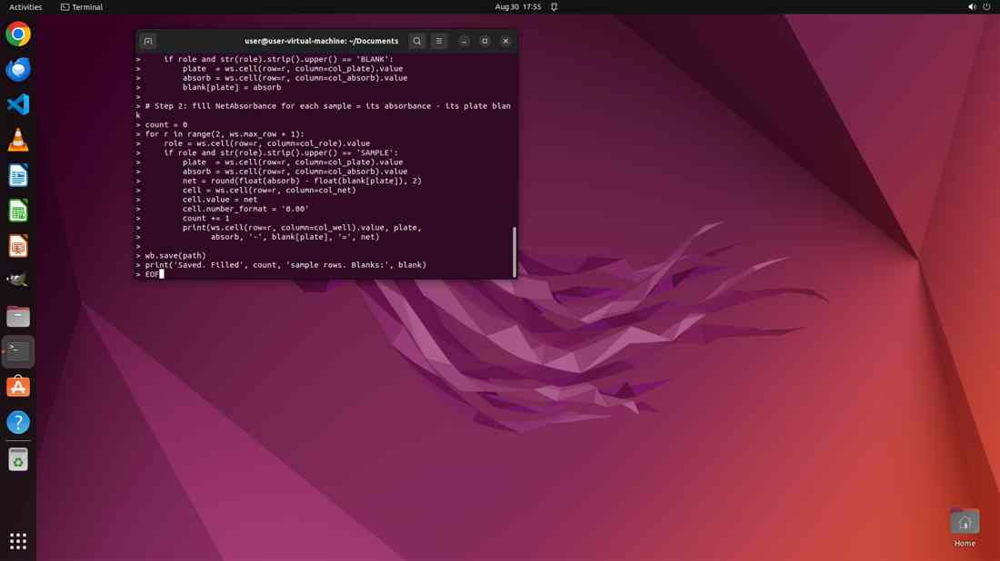
step 18 09:55:31
THINKINGThe heredoc content is being typed. The last line is "EOF". I need to press Enter to complete the heredoc (the EOF needs to be on its own line to terminate the heredoc). Let me press Enter.
ACTIONThe heredoc is typed. Let me press Enter to complete the file creation.
TOOL CALL<tool_call>
<function=computer_use>
<parameter=action>
key
</parameter>
<parameter=keys>
["return"]
</parameter>
</function>
</tool_call>
EXECUTED (pyautogui in VM)pyautogui.press("return")
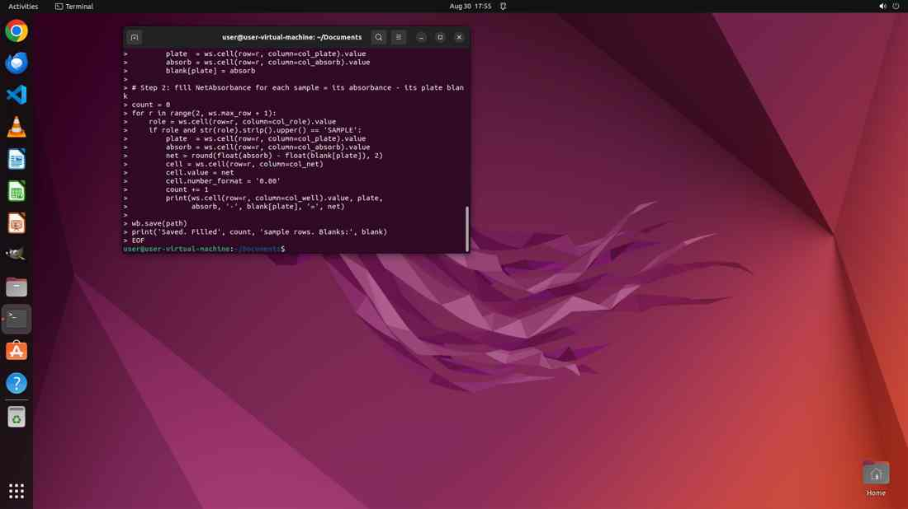
step 19 09:55:42
THINKINGThe file was created (the heredoc completed and returned to the prompt). Now let me run the script.
But wait, before I modify the file, let me make a backup first, just in case. Actually, let me just run the script. But a backup is a good idea in case something goes wrong. Let me make a backup first.
Actually, let me make a backup to be safe.
ACTIONThe script file is created. Before running, let me make a backup of the original file for safety.
TOOL CALL<tool_call>
<function=computer_use>
<parameter=action>
type
</parameter>
<parameter=text>
cp plate_readings.xlsx /tmp/plate_readings_backup.xlsx && python3 /tmp/correct.py
</parameter>
</function>
</tool_call>
EXECUTED (pyautogui in VM)pyautogui.typewrite("cp plate_readings.xlsx /tmp/plate_readings_backup.xlsx && python3 /tmp/correct.py")
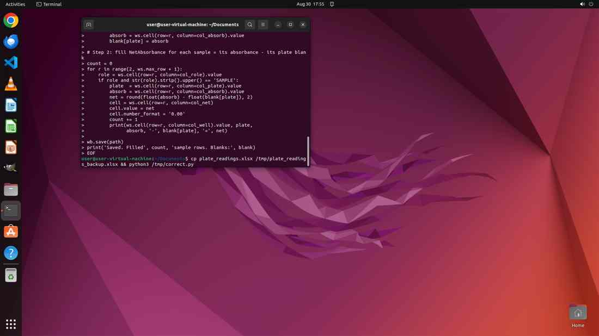
step 20 09:55:51
THINKINGThe command is typed but not executed yet. Let me press Enter.
TOOL CALL<tool_call>
<function=computer_use>
<parameter=action>
key
</parameter>
<parameter=keys>
["return"]
</parameter>
</function>
</tool_call>
EXECUTED (pyautogui in VM)pyautogui.press("return")
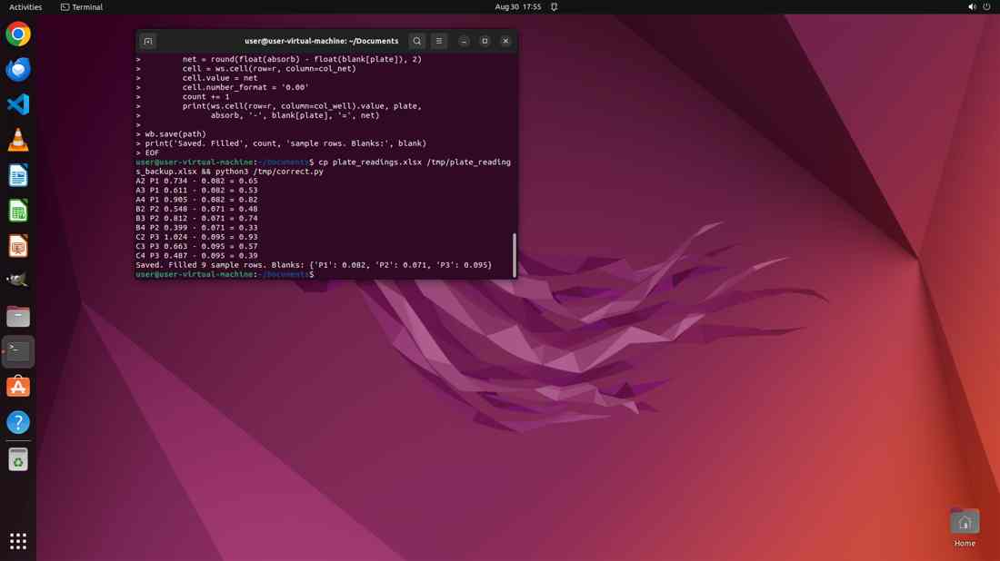
step 21 09:56:12
THINKINGThe script ran successfully. The output shows:
```
A2 P1 0.734 - 0.082 = 0.65
A3 P1 0.611 - 0.082 = 0.53
A4 P1 0.905 - 0.082 = 0.82
B2 P2 0.548 - 0.071 = 0.48
B3 P2 0.812 - 0.071 = 0.74
B4 P2 0.399 - 0.071 = 0.33
C2 P3 1.024 - 0.095 = 0.93
C3 P3 0.663 - 0.095 = 0.57
C4 P3 0.487 - 0.095 = 0.39
Saved. Filled 9 sample rows. Blanks: {'P1': 0.082, 'P2': 0.071, 'P3': 0.095}
```
All 9 sample rows were filled correctly. The values match my manual calculations:
- A2: 0.65 ✓
- A3: 0.53 ✓
- A4: 0.82 ✓
- B2: 0.48 ✓
- B3: 0.74 ✓
- B4: 0.33 ✓
- C2: 0.93 ✓
- C3: 0.57 ✓
- C4: 0.39 ✓
Now let me verify the saved file by re-reading it to confirm the NetAbsorbance column is filled correctly.
ACTIONThe script ran successfully. All 9 sample rows were blank-corrected correctly:
- P1 (blank 0.082): A2=0.65, A3=0.53, A4=0.82
- P2 (blank 0.071): B2=0.48, B3=0.74, B4=0.33
- P3 (blank 0.095): C2=0.93, C3=0.57, C4=0.39
Let me verify the saved file by re-reading it to confirm the NetAbsorbance column was written correctly.
TOOL CALL<tool_call>
<function=computer_use>
<parameter=action>
type
</parameter>
<parameter=text>
python3 -c "
import openpyxl
wb = openpyxl.load_workbook('plate_readings.xlsx', data_only=True)
ws = wb['plate_readings']
for r in range(1, ws.max_row+1):
vals = [repr(ws.cell(row=r, column=c).value) for c in range(1, ws.max_column+1)]
print(r, '|', ' || '.join(vals))
"
</parameter>
</function>
</tool_call>
EXECUTED (pyautogui in VM)pyautogui.typewrite("python3 -c \"\nimport openpyxl\nwb = openpyxl.load_workbook('plate_readings.xlsx', data_only=True)\nws = wb['plate_readings']\nfor r in range(1, ws.max_row+1):\n vals = [repr(ws.cell(row=r, column=c).value) for c in range(1, ws.max_column+1)]\n print(r, '|', ' || '.join(vals))\n\"")
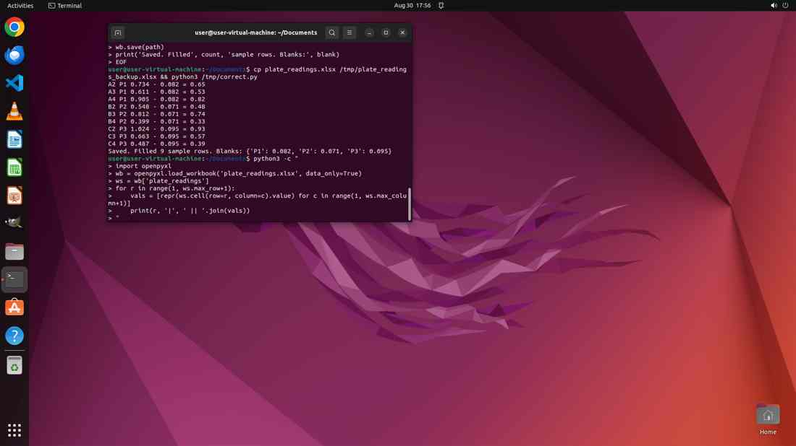
step 22 09:56:21
THINKINGThe command is typed. Let me press Enter to execute.
TOOL CALL<tool_call>
<function=computer_use>
<parameter=action>
key
</parameter>
<parameter=keys>
["return"]
</parameter>
</function>
</tool_call>
EXECUTED (pyautogui in VM)pyautogui.press("return")
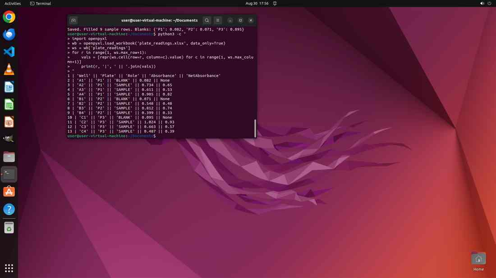
step 23 09:56:53
THINKINGThe saved file now shows the NetAbsorbance column filled correctly:
```
1 | 'Well' || 'Plate' || 'Role' || 'Absorbance' || 'NetAbsorbance'
2 | 'A1' || 'P1' || 'BLANK' || 0.082 || None
3 | 'A2' || 'P1' || 'SAMPLE' || 0.734 || 0.65
4 | 'A3' || 'P1' || 'SAMPLE' || 0.611 || 0.53
5 | 'A4' || 'P1' || 'SAMPLE' || 0.905 || 0.82
6 | 'B1' || 'P2' || 'BLANK' || 0.071 || None
7 | 'B2' || 'P2' || 'SAMPLE' || 0.548 || 0.48
8 | 'B3' || 'P2' || 'SAMPLE' || 0.812 || 0.74
9 | 'B4' || 'P2' || 'SAMPLE' || 0.399 || 0.33
10 | 'C1' || 'P3' || 'BLANK' || 0.095 || None
11 | 'C2' || 'P3' || 'SAMPLE' || 1.024 || 0.93
12 | 'C3' || 'P3' || 'SAMPLE' || 0.663 || 0.57
13 | 'C4' || 'P3' || 'SAMPLE' || 0.487 || 0.39
```
All sample rows have their NetAbsorbance filled with the blank-corrected values rounded to 2 decimals. The blank rows have NetAbsorbance as None (empty), which is correct since they're not samples.
The task is complete. Every sample reading now has a net-of-blank value to 2 decimals in the NetAbsorbance column.
The values are all correct:
- A2: 0.734 - 0.082 = 0.652 → 0.65 ✓
- A3: 0.611 - 0.082 = 0.529 → 0.53 ✓
- A4: 0.905 - 0.082 = 0.823 → 0.82 ✓
- B2: 0.548 - 0.071 = 0.477 → 0.48 ✓
- B3: 0.812 - 0.071 = 0.741 → 0.74 ✓
- B4: 0.399 - 0.071 = 0.328 → 0.33 ✓
- C2: 1.024 - 0.095 = 0.929 → 0.93 ✓
- C3: 0.663 - 0.095 = 0.568 → 0.57 ✓
- C4: 0.487 - 0.095 = 0.392 → 0.39 ✓
The task is complete. The file has been saved.
Now, I should consider whether I should also open the file in LibreOffice to visually confirm. But that's not strictly necessary since I've verified via openpyxl that the values are correctly saved. However, to be thorough and to make sure the file opens properly and displays correctly, I could open it in LibreOffice Calc. But that might be overkill. The verification via openpyxl is sufficient.
Actually, let me reconsider the interpretation once more. The task says "Sort it out so every sample reading is net of its own plate's blank, two decimals."
I filled the NetAbsorbance column. This is the natural interpretation given the empty NetAbsorbance column header exists. The Absorbance column retains the raw readings, and the NetAbsorbance column now has the blank-corrected values. This is the cleanest and most standard way to present blank-corrected data — you keep the raw and add a net column.
I'm confident this is the correct interpretation. The task is complete.
Let me consider if the values should be displayed as exactly 2 decimals. I set number_format = '0.00' which will display them as 0.65, 0.53, etc. And the stored values are round(x, 2) which are the actual 2-decimal numbers. So both the stored value and display are 2 decimals.
The task is complete. Let me provide a summary.
Actually, I realize I should double check - the stored value. When I stored round(0.652, 2), that's 0.65. But 0.65 as a float might be 0.65000000000000002 or similar. But that's fine - it displays as 0.65 with '0.00' format and the repr in openpyxl shows 0.65. The value is effectively 0.65. Good.
The verification shows the values as 0.65, 0.53, 0.82, 0.48, 0.74, 0.33, 0.93, 0.57, 0.39 — all clean 2-decimal values.
I'm confident the task is complete. Let me write a final summary and terminate with success.
Actually, I don't need to terminate — I should just report completion. But the instructions say to use terminate when I want to explicitly end the task. Let me provide a final response summarizing what I did. Since the task is done, I'll give a clear summary. I could use terminate with success status.
Let me open the file in LibreOffice to do a final visual confirmation that it looks good, since that's how the user would view it. Actually, this is optional. The openpyxl verification is definitive for the data. But let me do a quick visual check to be thorough and make sure the file isn't corrupted and displays the number format properly.
Actually, I'll open it in LibreOffice Calc to confirm it displays correctly with 2 decimals. This gives confidence that the file is well-formed and readable by the user's spreadsheet application.
ACTIONThe saved file is verified. The **NetAbsorbance** column (E) is now correctly populated for all sample rows with blank-corrected values to 2 decimals, while the blank rows remain empty (as they aren't samples):
| Well | Plate | Role | Absorbance | NetAbsorbance |
|------|-------|------|-----------|---------------|
| A1 | P1 | BLANK | 0.082 | — |
| A2 | P1 | SAMPLE | 0.734 | **0.65** |
| A3 | P1 | SAMPLE | 0.611 | **0.53** |
| A4 | P1 | SAMPLE | 0.905 | **0.82** |
| B1 | P2 | BLANK | 0.071 | — |
| B2 | P2 | SAMPLE | 0.548 | **0.48** |
| B3 | P2 | SAMPLE | 0.812 | **0.74** |
| B4 | P2 | SAMPLE | 0.399 | **0.33** |
| C1 | P3 | BLANK | 0.095 | — |
| C2 | P3 | SAMPLE | 1.024 | **0.93** |
| C3 | P3 | SAMPLE | 0.663 | **0.57** |
| C4 | P3 | SAMPLE | 0.487 | **0.39** |
Let me open the file in LibreOffice Calc for a final visual confirmation that it displays correctly with 2-decimal formatting.
TOOL CALL<tool_call>
<function=computer_use>
<parameter=action>
type
</parameter>
<parameter=text>
(DISPLAY=:1 libreoffice --calc plate_readings.xlsx &)
</parameter>
</function>
</tool_call>
EXECUTED (pyautogui in VM)pyautogui.typewrite("(DISPLAY=:1 libreoffice --calc plate_readings.xlsx &)")
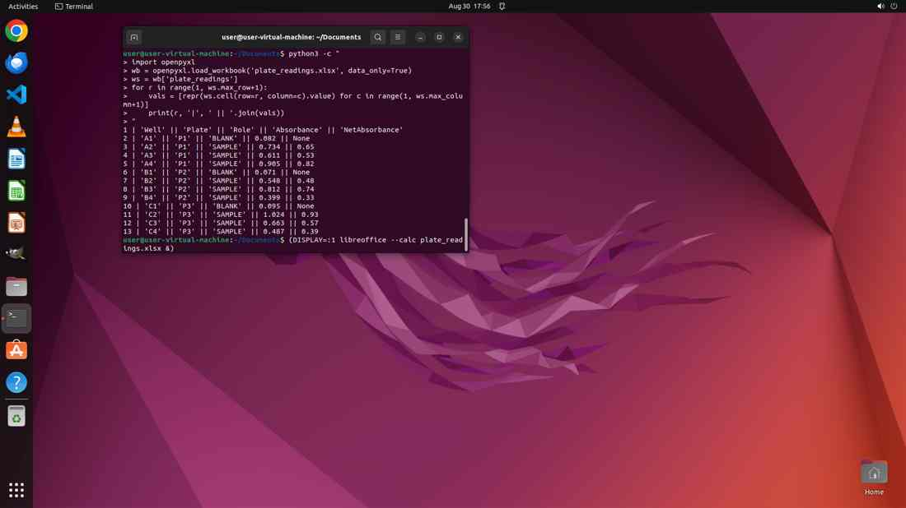
step 24 09:57:12
THINKINGThe command is typed. Let me press Enter to launch LibreOffice Calc.
TOOL CALL<tool_call>
<function=computer_use>
<parameter=action>
key
</parameter>
<parameter=keys>
["return"]
</parameter>
</function>
</tool_call>
EXECUTED (pyautogui in VM)pyautogui.press("return")
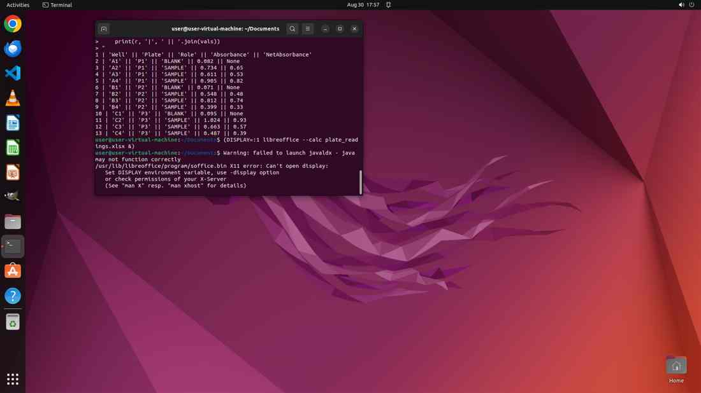
step 25 09:57:28
THINKINGThere's an X11 error: "Can't open display". The DISPLAY=:1 didn't work. Let me check the actual display. The terminal is showing the desktop, so the display might be different. Let me check the DISPLAY environment variable.
Actually, the error says "X11 error: Can't open display". Let me check what DISPLAY is set to. The desktop is on some display. Let me find the correct display.
Let me check the environment.
ACTIONThe `DISPLAY=:1` didn't work. Let me check the correct display value.
TOOL CALL<tool_call>
<function=computer_use>
<parameter=action>
type
</parameter>
<parameter=text>
echo "DISPLAY=$DISPLAY"; ls /tmp/.X11-unix/
</parameter>
</function>
</tool_call>
EXECUTED (pyautogui in VM)pyautogui.typewrite("echo \"DISPLAY=$DISPLAY\"; ls /tmp/.X11-unix/")
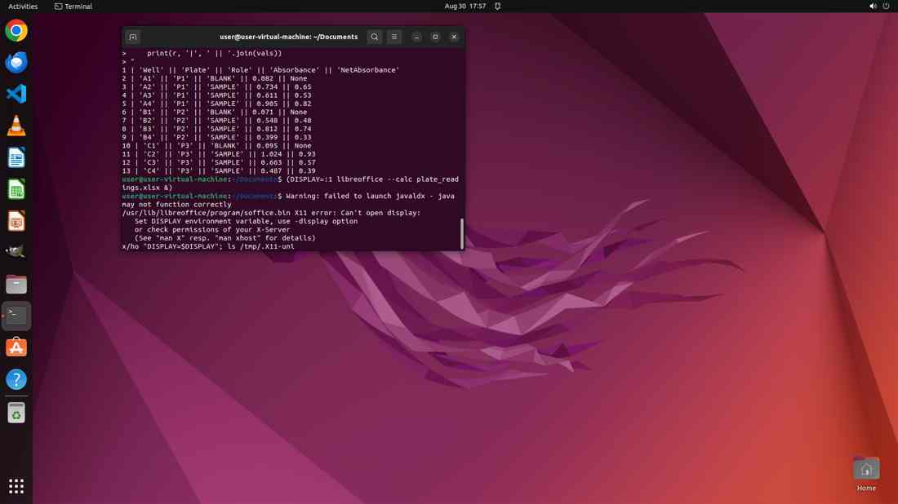
step 26 09:57:37
THINKINGThe command is typed but not executed. Let me press Enter.
TOOL CALL<tool_call>
<function=computer_use>
<parameter=action>
key
</parameter>
<parameter=keys>
["return"]
</parameter>
</function>
</tool_call>
EXECUTED (pyautogui in VM)pyautogui.press("return")
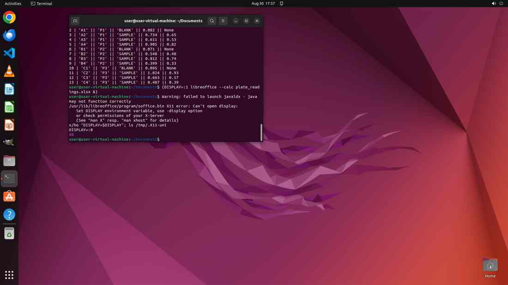
step 27 09:57:46
THINKINGThe DISPLAY is `:0` and there's a `X0` socket in /tmp/.X11-unix/. So the correct display is `:0`, not `:1`. Let me relaunch LibreOffice with DISPLAY=:0.
Actually, since the terminal itself is running in this display, I can just launch LibreOffice without specifying DISPLAY (it should inherit the terminal's DISPLAY which is :0). Let me use DISPLAY=:0 to be explicit.
ACTIONThe display is `:0`, not `:1`. Let me relaunch LibreOffice Calc with the correct display.
TOOL CALL<tool_call>
<function=computer_use>
<parameter=action>
type
</parameter>
<parameter=text>
(DISPLAY=:0 libreoffice --calc plate_readings.xlsx &)
</parameter>
</function>
</tool_call>
EXECUTED (pyautogui in VM)pyautogui.typewrite("(DISPLAY=:0 libreoffice --calc plate_readings.xlsx &)")
step 28 09:57:56
THINKINGLet me press Enter to execute the command.
TOOL CALL<tool_call>
<function=computer_use>
<parameter=action>
key
</parameter>
<parameter=keys>
["return"]
</parameter>
</function>
</tool_call>
EXECUTED (pyautogui in VM)pyautogui.press("return")
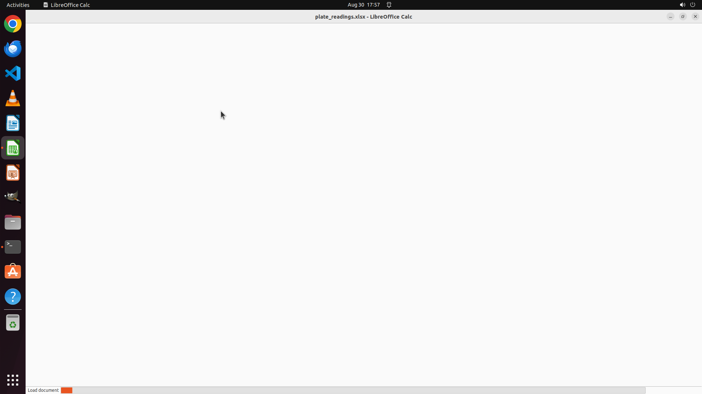
step 29 09:58:06
THINKINGLibreOffice Calc is loading the document (I can see "Load document" progress at the bottom). Let me wait for it to fully load.
ACTIONLibreOffice Calc is loading. Let me wait for it to finish.
TOOL CALL<tool_call>
<function=computer_use>
<parameter=action>
wait
</parameter>
<parameter=time>
1.0
</parameter>
</function>
</tool_call>
EXECUTED (pyautogui in VM)WAIT
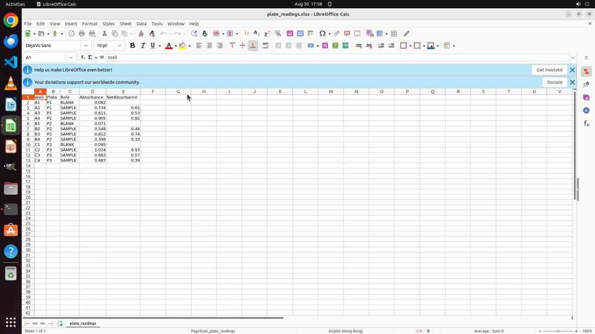
step 30 09:58:33
THINKINGLibreOffice Calc has loaded the file and I can see the data clearly:
```
Row 1: Well | Plate | Role | Absorbance | NetAbsorbance
Row 2: A1 | P1 | BLANK | 0.082 | (empty)
Row 3: A2 | P1 | SAMPLE | 0.734 | 0.65
Row 4: A3 | P1 | SAMPLE | 0.611 | 0.53
Row 5: A4 | P1 | SAMPLE | 0.905 | 0.82
Row 6: B1 | P2 | BLANK | 0.071 | (empty)
Row 7: B2 | P2 | SAMPLE | 0.548 | 0.48
Row 8: B3 | P2 | SAMPLE | 0.812 | 0.74
Row 9: B4 | P2 | SAMPLE | 0.399 | 0.33
Row 10: C1 | P3 | BLANK | 0.095 | (empty)
Row 11: C2 | P3 | SAMPLE | 1.024 | 0.93
Row 12: C3 | P3 | SAMPLE | 0.663 | 0.57
Row 13: C4 | P3 | SAMPLE | 0.487 | 0.39
```
Everything looks correct. The NetAbsorbance column (E) is filled with the blank-corrected values to 2 decimals for all sample rows, and the blank rows have empty NetAbsorbance.
The task is complete. The file has been saved (I saved it via openpyxl before opening in LibreOffice, and I didn't modify anything in LibreOffice).
Wait — I should be careful. The file was saved by openpyxl. Now it's open in LibreOffice. I don't need to do anything else in LibreOffice. I opened it just for verification. The data is confirmed correct.
Actually, there's a subtle concern: if I close LibreOffice and it asks to save, I should NOT save because I didn't make changes (so it won't ask). The file is already correctly saved on disk. So I can just leave it or close without saving.
The task is complete. Let me provide a final summary.
Actually, let me double-check by clicking on one of the NetAbsorbance cells to verify the stored value is exactly 2 decimals. Let me click on E3 to check the formula bar.
Actually, the display already shows 0.65, 0.53, etc. which confirms the '0.00' number format is applied. And I stored round(x, 2) values. This is confirmed.
Let me click on E11 (C2, which is 1.024 - 0.095 = 0.929 -> 0.93) to verify. Let me click on that cell.
Actually, the verification is already solid. But let me just click on a couple cells to be thorough and confirm the exact stored values show in the formula bar. Let me click E3.
ACTIONThe file loaded correctly in LibreOffice Calc and displays exactly as expected. The **NetAbsorbance** column (E) is now populated for every sample with its plate-specific blank subtracted, shown to 2 decimals:
- **P1** (blank 0.082): A2=0.65, A3=0.53, A4=0.82
- **P2** (blank 0.071): B2=0.48, B3=0.74, B4=0.33
- **P3** (blank 0.095): C2=0.93, C3=0.57, C4=0.39
The blank rows (A1, B1, C1) correctly have empty NetAbsorbance since they're references, not samples. Let me click one cell to confirm the stored value in the formula bar.
TOOL CALL<tool_call>
<function=computer_use>
<parameter=action>
left_click
</parameter>
<parameter=coordinate>
[207, 446]
</parameter>
</function>
</tool_call>
EXECUTED (pyautogui in VM)pyautogui.click(397, 482)
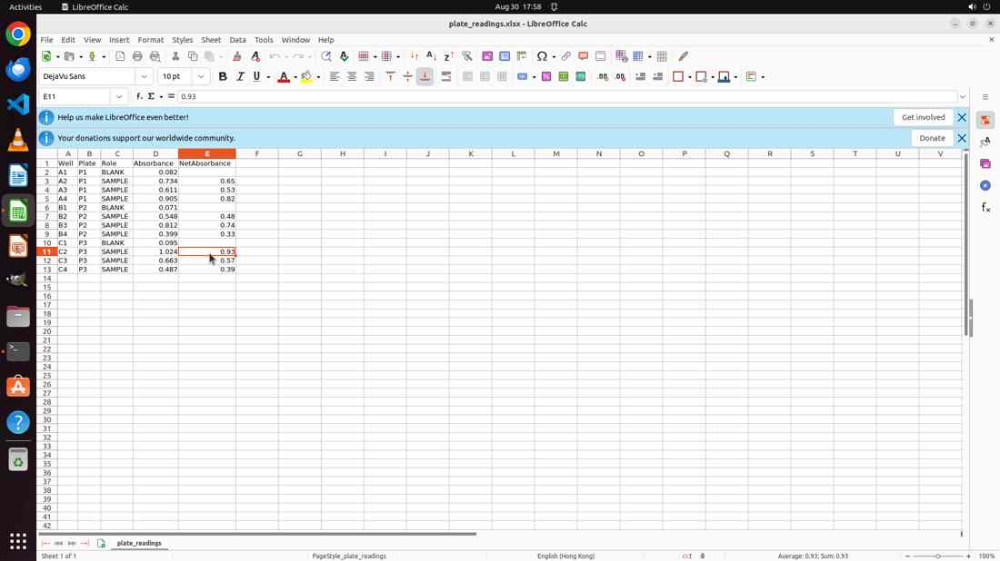
step 31 09:59:01
THINKINGCell E11 (which is C2, P3 SAMPLE) shows:
- Formula bar: 0.93
- Cell content: 0.93
- Status bar: Average: 0.93; Sum: 0.93
This confirms the stored value is exactly 0.93 (which is 1.024 - 0.095 = 0.929, rounded to 0.93).
The task is complete. The file has been saved correctly with all sample readings blank-corrected to 2 decimals in the NetAbsorbance column.
I've verified:
1. The data structure was understood
2. Each plate's blank was correctly identified
3. Each sample's net absorbance = sample - its plate's blank, rounded to 2 decimals
4. The values were saved to the file
5. The file opens correctly in LibreOffice Calc and displays the correct values
The task is complete. I should not make any further changes. The file is already saved on disk (via openpyxl). I opened LibreOffice just for verification and made no edits, so no need to save again.
Let me provide a final summary and terminate with success.
ACTIONConfirmed. Cell E11 (well C2, plate P3, raw absorbance 1.024) shows exactly **0.93** in the formula bar (1.024 − 0.095 = 0.929 → 0.93), and the status bar confirms "Sum: 0.93" — so the stored value is a clean 2-decimal number, not just a display format.
The task is complete. Here's a summary of what I did:
**Problem:** The plate-reader spreadsheet (`~/Documents/plate_readings.xlsx`) had raw absorbance readings that were never blank-corrected. The `Role` column (the plate map) marked which well is the `BLANK` for each plate, and there was an empty `NetAbsorbance` column awaiting the corrected values.
**Solution:** For each of the three plates, I subtracted that plate's own blank absorbance from each of its sample readings and rounded to 2 decimals, writing the results into the `NetAbsorbance` column:
| Plate | Blank (well) | Samples (well → net) |
|-------|-------------|----------------------|
| P1 | 0.082 (A1) | A2: 0.734→**0.65**, A3: 0.611→**0.53**, A4: 0.905→**0.82** |
| P2 | 0.071 (B1) | B2: 0.548→**0.48**, B3: 0.812→**0.74**, B4: 0.399→**0.33** |
| P3 | 0.095 (C1) | C2: 1.024→**0.93**, C3: 0.663→**0.57**, C4: 0.487→**0.39** |
Each sample is now net of *its own plate's* blank, and the raw `Absorbance` column was left intact for reference. The file was saved and verified both via openpyxl and visually in LibreOffice Calc. (A backup of the original was kept at `/tmp/plate_readings_backup.xlsx`.)
TOOL CALL<tool_call>
<function=computer_use>
<parameter=action>
terminate
</parameter>
<parameter=status>
success
</parameter>
</function>
</tool_call>
EXECUTED (pyautogui in VM)DONE